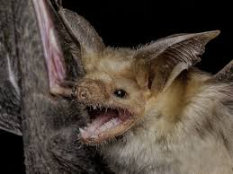

Опастность
Летучие мыши являются естественным резервуаром бешенства и, по данным ВОЗ, вирусов Марбург, Эбола и коронавирусов, входящих в группу особо опасных инфекций — список самых опасных для человека известных патогенных вирусов, являющихся причиной смертельных заболеваний. Имеются фактические данные о причастности летучих мышей к передаче инфекции. Эта биологическая опасность является непосредственным следствием образа жизни этих животных.